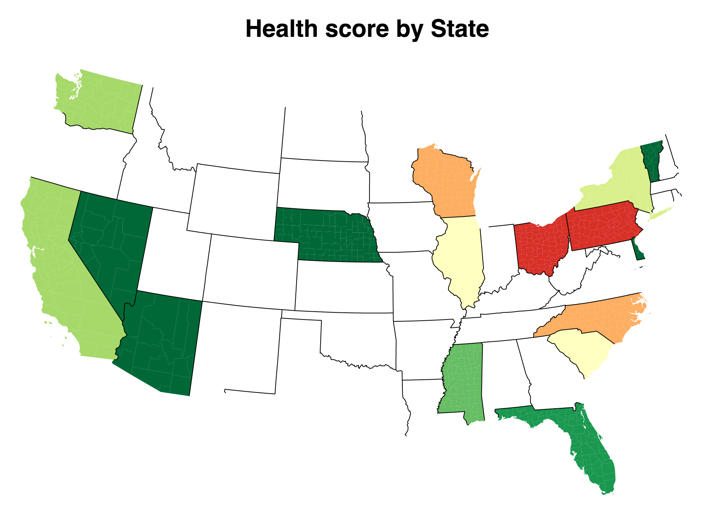
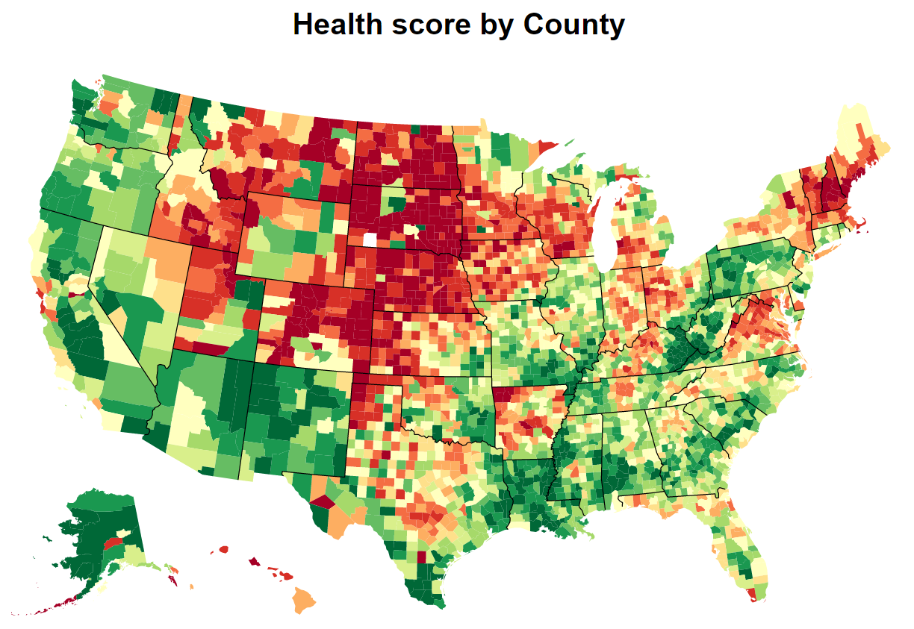
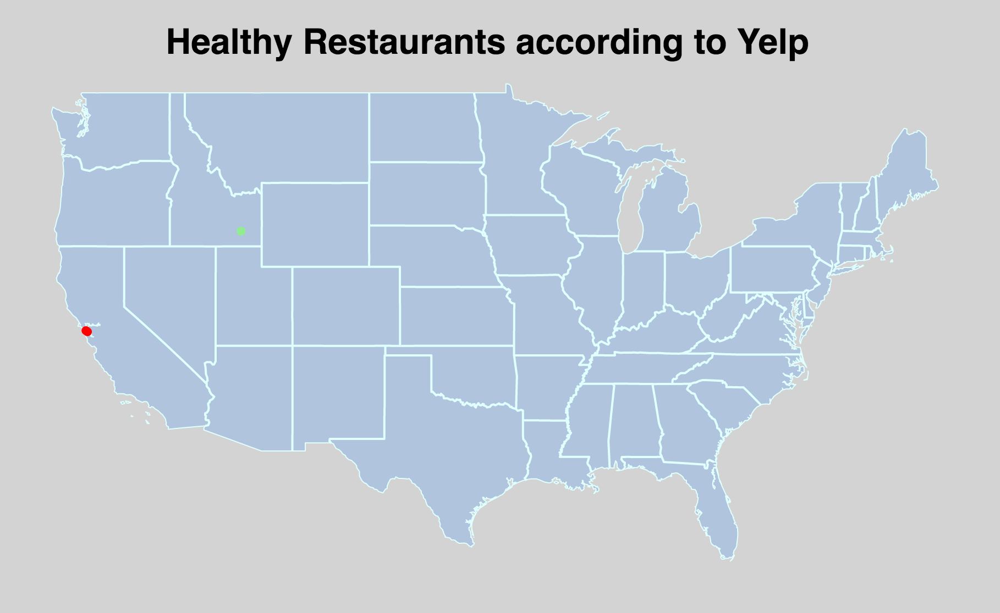

Problem: As we grow as a society, we learn more and more the importance of eating healthy. The problem is, living in a region known for fast, greasy food, it's often a challenge finding healthy, highly rated dining options when eating out.
Solution: Yealth helps people find healthy restaurants. Our "health score" algorithm gives a health rating to restaurants based on real customer Yelp reviews by analyzing the text for key health-related words. People looking for healthy eating options can use our color coded map to find and compare healthiness!
Done
- Document Modelling
- Model health sentiment
- Distribution curve of health sentiment
- Choropleth distribution of health sentiment in the U.S.
- Scatter plot map of restaurant health sentiment in the U.S.
- Scatter plot map of restaurant health sentiment by state
Possible improvements
- Application to view all health sentiment maps in one place
- Collect additional data to expand choropleth distribution
- Compare Health sentiment to health inspection data and health census data
- Compare Review score to Review sentiment to deduce fake reviews?